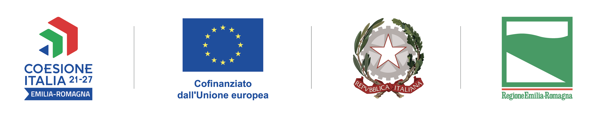

← Tutti i progetti e bandiInnovazione · Progetto cofinanziato
PLASMA-Ster
Un nuovo percorso per la sterilizzazione.
PLASMA-Ster: innovativo processo di sterilizzazione alternativo ed ecosostenibile per dispositivi medici
Realizzazione di un impianto di sterilizzazione alternativo basato sulla tecnologia al plasma freddo, attraverso spese per la componentistica dei generatori, per il brevetto e per test specialistici. Il finanziamento regionale ha permesso di aiutare la validazione del processo e l’allestimento della zona dedicata, permettendo di velocizzare i tempi di entrata in un mercato ancora poco presidiato.

Il poster riporta la descrizione e i riferimenti istituzionali del progetto.